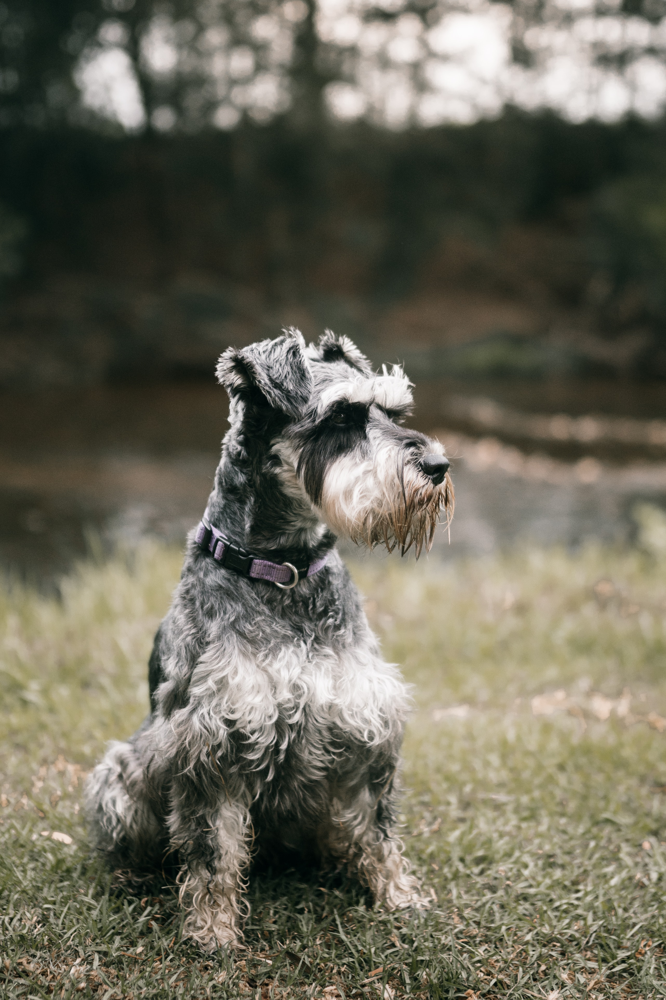

Top Best Review

Schnauzer
The Schnauzer is a breed of dog native to Germany, known for its distinctive looks and versatile abilities. This breed comes in three different sizes: the Miniature Schnauzer, the Standard Schnauzer, and the Giant Schnauzer. Despite the differences in size, all Schnauzers share common characteristics such as their bushy coat, prominent whiskers and eyebrows, and high, folded ears. Their fur is dense, hard, and weather resistant, allowing them to adapt well to various environments and climates. Plus, these dogs are hypoallergenic, making them a great choice for people with animal allergies.
Schnauzers are intelligent, energetic, and loyal dogs, making them excellent family companions and protective friends. They are known for their bravery and tenacity, characteristics that allowed them to originally serve as farm dogs, rodent hunters, and guard dogs. Over the years, Schnauzers have also proven well-suited to a wide variety of roles, including therapy dogs, service dogs, and participants in dog sports such as agility and obedience.
To keep a Schnauzer healthy and happy, it's important to provide them with regular exercise and mental stimulation. These dogs enjoy long walks, games, and activities that challenge their intelligence. Also, due to their unique coat, they require regular grooming, including brushing and clipping, to maintain their appearance and prevent tangling. In general, Schnauzers are loyal, affectionate, and adaptable dogs that, with proper care and attention, can become a wonderful addition to any home.
Chihuahua
The Chihuahua is a breed of dog originally from Mexico, known for being the smallest breed in the world. Despite their diminutive size, these dogs pack a huge personality, making them charming and lively companions. Chihuahuas come in two varieties: long-haired and short-haired, both equally attractive and easy to care for. Plus, their small size makes them ideal for homes with limited space or for people looking for an easy-to-carry canine companion.
These diminutive dogs are known for their loyalty and strong bond with their owners, often making them surprisingly effective watchdogs, always alert and ready to defend their loved ones. Chihuahuas are intelligent, curious, and full of energy, which means that while they don't need as much exercise as other larger breeds, they still require regular mental and physical stimulation. Socializing Chihuahuas from an early age is critical, as they can be territorial and mistrustful of strangers if they're not used to different people and situations.
Proper Chihuahua care includes a balanced diet, moderate exercise, and attention to dental health, as these little dogs are prone to dental problems due to the size of their jaws. Although Chihuahuas are hardy and have a relatively long lifespan, they are also susceptible to cold due to their small size and little insulation in their fur, so adequate shelter should be provided during the colder months. In short, Chihuahuas are charming dogs full of personality that, with proper care and attention, can be loyal and loving companions in any home.
Golden Retriever
The Golden Retriever is a breed of dog native to Scotland, known for its golden coat and friendly, affectionate personality. These medium to large-sized dogs are popular around the world as family companions and working dogs due to their intelligence, adaptability, and love of people. With their beautiful, wavy, golden coats, Golden Retrievers are visually appealing while also being weather resistant, allowing them to enjoy outdoor activities in a variety of weather conditions.
Golden Retrievers are intelligent, friendly, and good-natured dogs, making them ideal for a wide range of roles and environments. Originally bred as retrievers to assist hunters in retrieving waterfowl, their ability to learn quickly and their desire to please their owners allows them to excel in areas such as search and rescue, drug detection, therapy, and service. Their mild-mannered and patient temperament also makes them excellent companions for children and adults alike.
To keep a Golden Retriever happy and healthy, it is essential to provide them with regular exercise and mental stimulation. These dogs are active and require daily physical activity, such as long walks and recovery play, to stay in shape and avoid obesity-related health problems. In addition, their dense, wavy coat requires frequent brushing to keep it tangle-free and in top condition. With proper attention and care, Golden Retrievers can be wonderful and loyal companions, enriching their owners' lives with unconditional love and joy.